Linear Regression I
Lauren Cipriano
2024-10-07
Assignment 1 Solution
Data set
For this assignment, we will use the Pilgrim dataset
## Import the dataset
bank <- read.csv(url("https://laurencipriano.github.io/IveyBusinessStatistics/Datasets/PilgrimBankData.csv"))
## View the data
View(bank)
## Inspect the coding of various variables
summary(bank)> ID X9Profit X9Online X9Age X9Inc
> Min. : 1 Min. :-221 Min. :0.000 Min. :1 Min. :1
> 1st Qu.: 7909 1st Qu.: -34 1st Qu.:0.000 1st Qu.:3 1st Qu.:4
> Median :15818 Median : 9 Median :0.000 Median :4 Median :6
> Mean :15818 Mean : 112 Mean :0.122 Mean :4 Mean :5
> 3rd Qu.:23726 3rd Qu.: 164 3rd Qu.:0.000 3rd Qu.:5 3rd Qu.:7
> Max. :31634 Max. :2071 Max. :1.000 Max. :7 Max. :9
> NA's :8289 NA's :8261
> X9Tenure X9District X0Profit X0Online X9Billpay
> Min. : 0.2 Min. :1100 Min. :-5643 Min. :0 Min. :0.000
> 1st Qu.: 3.8 1st Qu.:1200 1st Qu.: -30 1st Qu.:0 1st Qu.:0.000
> Median : 7.4 Median :1200 Median : 23 Median :0 Median :0.000
> Mean :10.2 Mean :1203 Mean : 145 Mean :0 Mean :0.017
> 3rd Qu.:14.8 3rd Qu.:1200 3rd Qu.: 206 3rd Qu.:0 3rd Qu.:0.000
> Max. :41.2 Max. :1300 Max. :27086 Max. :1 Max. :1.000
> NA's :5238 NA's :5219
> X0Billpay
> Min. :0
> 1st Qu.:0
> Median :0
> Mean :0
> 3rd Qu.:0
> Max. :1
> NA's :5219Formatting of outputs
## suppress scientific notation for ease of reading numbers
options(scipen=99) Question 1
Q1. Calculate the mean and the 95% confidence interval around the mean customer profitability. Draw a histogram of customer profitability. Does the mean and 95% CI provide good insights into the central tendency of the customer profitability distribution?
## Calculate the mean of customer profitability
m = mean(bank$X9Profit)
sd = sd(bank$X9Profit)
n = length(bank$X9Profit)
se = sd/sqrt(n)
## 95% CI around the mean of profitability
lower95 = m + qnorm(0.025) * se
upper95 = m + qnorm(0.975) * se
print(c(observations = n, mean.profit = m, lower95 = lower95, upper95 = upper95))> observations mean.profit lower95 upper95
> 31634 112 108 115The average customer profitability is $111.50. Because this data is a random sample of 31,634 customers, there is uncertainty about what the true population mean is. The 95% confidence interval for the mean is $108.50 to $114.51. There is a 95% probability that the true population mean is within this interval.
# Draw a histogram
hist(bank$X9Profit)The histogram reveals a very large number of customers with profitability between -$250 to $0 and a highly skewed distribution with a long tail.
The arithmetic mean does not do a good job of characterizing the central tendency of the distribution of Profit because of this high-level of skew.
Question 2
Q2. Evaluate whether the customer profitability data is Normally distributed. What future analytical decisions does this evaluation inform?
The histogram presented in Question 1 demonstrates that customer profitability is not normally distributed.
We drive this point home by overlaying a Normal distribution on the histogram.
The analytical consequences are that parametric tests, like t-tests, comparing the means of two groups are unlikely to be appropriate. Non-parametric tests are likely going to be more appropriate because they do not make the assumption of population Normal distribution.
# Histogram of the sample average income
hist(bank$X9Profit,
yaxt = "n", # don't print the numbers on the y axis
xlim = c(-1000, 2000),
freq = FALSE, # Use density instead of frequency to scale the histogram
col = "grey") # Color of the histogram bars
# Generate values for the normal distribution curve
x_values <- seq(-1000, 2000, length.out = 3000)
y_values <- dnorm(x_values, mean = m, sd = sd)
# Add the normal distribution curve to the histogram
lines(x_values, y_values, col = "red", lwd = 2)Question 3
Q3. Use parametric and non-parametric statistical tests to evaluate whether online customers are more or less profitable than customers who do not use the bank’s online platform. For each test, what is the null hypothesis? What is the result of the statistical analysis? And, how do you interpret the results (if they are interpretable) in the context of the business case?
Parametric test
Null hypothesis: Average profit for the Online and Not Online groups are equal
Test: Two-sample t-test
Assumptions:
1. Outcome measure is continuous (Profit) - check
2. Random sample - check
3. Independent observations - check
4. Outcome measure is Normally distributed – NO! Histogram in Questions
1 & 2, demonstrate this is not true 5. Both groups have the same
variance
To be thorough, we will check the histograms for both the Online and not Online groups. We observe that both groups are not Normally distributed.
# Change formatting of graphs to print two side by side
par( mfrow= c( 1,2 ) )
# Checking Normality for each group
hist(bank$X9Profit[which(bank$X9Online == 0)],
main = "Histogram of Profit, Not online",
xlab = "Customer profit")
hist(bank$X9Profit[which(bank$X9Online == 1)],
main = "Histogram of Profit, Online",
xlab = "Customer profit")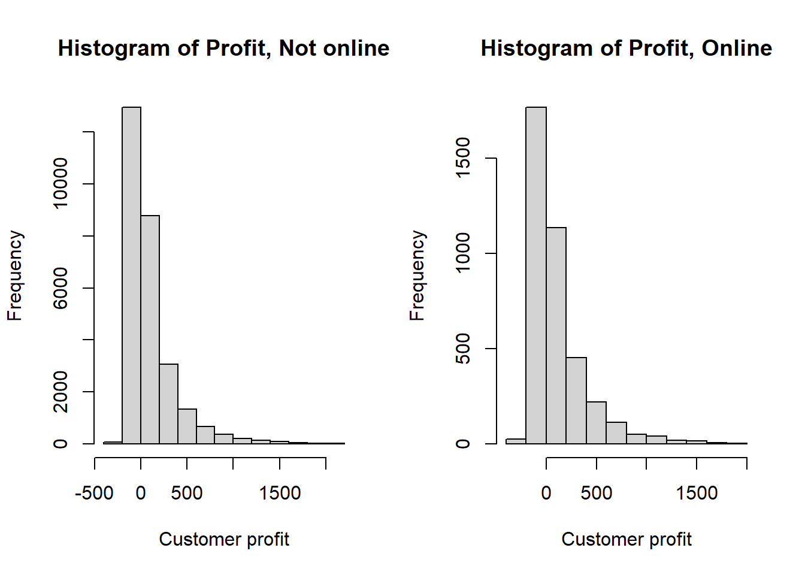
# Calculate the group average, number of observations, sd of income
t(aggregate(bank$X9Profit~bank$X9Online ,
FUN=function(x) {
c(avg = mean(x),
n = length(x),
sd = sd(x)
)
}
))> [,1] [,2]
> bank$X9Online 0 1
> bank$X9Profit.avg 111 117
> bank$X9Profit.n 27780 3854
> bank$X9Profit.sd 271 284Both groups have similar standard deviation. If the distributions were Normal and the standard deviations were different, we could use a Welsh’s t-test (default in R), but because the distributions are not Normal, we, instead, use a Mann Whitney test.
Presenting the results of a t-test because the question asked for it.
# T-test
t.test(bank$X9Profit~bank$X9Online)>
> Welch Two Sample t-test
>
> data: bank$X9Profit by bank$X9Online
> t = -1, df = 4882, p-value = 0.2
> alternative hypothesis: true difference in means between group 0 and group 1 is not equal to 0
> 95 percent confidence interval:
> -15.39 3.63
> sample estimates:
> mean in group 0 mean in group 1
> 111 117Interpretation: The p-value is greater than 0.05, so we cannot reject the null hypothesis of the two groups having the same mean. The sample mean of the online group has a higher average ($116.67 vs. $110.79), but this difference is not statistically different.
Non-Parametric test
Null hypothesis: Profit for the Online and Not Online groups come from the same population distribution.
Test: Mann-Whitney U test
Assumptions:
1. Outcome measure is continuous, ordinal, or rank (Profit) -
check
2. Random sample - check
3. Independent observations - check
# T-test
wilcox.test(bank$X9Profit~bank$X9Online)>
> Wilcoxon rank sum test with continuity correction
>
> data: bank$X9Profit by bank$X9Online
> W = 54267758, p-value = 0.2
> alternative hypothesis: true location shift is not equal to 0Interpretation: The p-value is greater than 0.05, so we cannot reject the null hypothesis of the two groups coming from the same distribution.
Question 4
Q4. Both observing and not observing a statistical difference between the customers who do and do not use online banking may be the result of confounding. That is, customers who use online banking may be systematically different in some other way from those who do not use online banking. Are customers who use online services different demographically than customers who do not use online services? In what way? Hint: Please be mindful of missing data, appropriate analysis of categorical data, and selection of the correct statistical test when performing these analyses.
Labelling categorical variables
First we create variables with labelled categories for Age, Income, and Region. We check our coding was correct and then we calculate the mean and standard deviation of Profit for each age group. We observe that over 8000 customer records do not have age and about the same number do not have income.
Age
# create a new variable with labelled categories for Age
bank$AgeCat <- factor(bank$X9Age,
labels = c("lt 15", "15 to 24", "25 to 34", "35 to 44",
"45 to 54", "55 to 64", "65 plus"))
# check the coding
table(bank$AgeCat, bank$X9Age, useNA = "ifany")>
> 1 2 3 4 5 6 7 <NA>
> lt 15 710 0 0 0 0 0 0 0
> 15 to 24 0 3650 0 0 0 0 0 0
> 25 to 34 0 0 5390 0 0 0 0 0
> 35 to 44 0 0 0 5376 0 0 0 0
> 45 to 54 0 0 0 0 3236 0 0 0
> 55 to 64 0 0 0 0 0 2290 0 0
> 65 plus 0 0 0 0 0 0 2693 0
> <NA> 0 0 0 0 0 0 0 8289Income
# create a new variable with labelled categories for Income
bank$IncCat <- factor(bank$X9Inc,
labels = c("lt 15K", "15-20K", "20-30K", "30-40K", "40-50K",
"50-75K", "75-100K", "100-125K", "125K plus"))
# check the coding
table(bank$IncCat, bank$X9Inc, useNA = "ifany")>
> 1 2 3 4 5 6 7 8 9 <NA>
> lt 15K 2044 0 0 0 0 0 0 0 0 0
> 15-20K 0 810 0 0 0 0 0 0 0 0
> 20-30K 0 0 2571 0 0 0 0 0 0 0
> 30-40K 0 0 0 2312 0 0 0 0 0 0
> 40-50K 0 0 0 0 2369 0 0 0 0 0
> 50-75K 0 0 0 0 0 5413 0 0 0 0
> 75-100K 0 0 0 0 0 0 3152 0 0 0
> 100-125K 0 0 0 0 0 0 0 1742 0 0
> 125K plus 0 0 0 0 0 0 0 0 2960 0
> <NA> 0 0 0 0 0 0 0 0 0 8261Region
# create a new variable with labelled categories for Income
bank$Region <- factor(bank$X9District,
labels = c("A", "B", "C"))
# check the coding
table(bank$Region, bank$X9District, useNA = "ifany")>
> 1100 1200 1300
> A 3142 0 0
> B 0 24342 0
> C 0 0 4150Analysis of Missing Variables
## Create a variable to indicate missing age
bank$missing.age <- NA
bank$missing.age[is.na(bank$X9Age) == TRUE] <- 10
# Note: assigned value doesn't matter, use 10 to make it easy to identify in tables
bank$missing.age[is.na(bank$X9Age) == FALSE] <- 0
## Create a variable to indicate missing income
bank$missing.inc <- NA
bank$missing.inc[is.na(bank$X9Inc) == TRUE] <- 20
bank$missing.inc[is.na(bank$X9Inc) == FALSE] <- 0
## Is missing Age more/less likely for customers who are Online?
t(table(bank$missing.age, bank$X9Online))/colSums(table(bank$missing.age, bank$X9Online))>
> 0 10
> 0 0.733 0.267
> 1 0.777 0.223## Is missing Age more/less likely for customers by Region?
t(table(bank$missing.age, bank$Region))/colSums(table(bank$missing.age, bank$Region))>
> 0 10
> A 0.708 0.292
> B 0.745 0.255
> C 0.722 0.278## Is missing Age more/less likely for customers by Income category?
t(table(bank$missing.age, bank$IncCat))/colSums(table(bank$missing.age, bank$IncCat))>
> 0 10
> lt 15K 0.93787 0.06213
> 15-20K 0.96296 0.03704
> 20-30K 0.96383 0.03617
> 30-40K 0.97967 0.02033
> 40-50K 0.98312 0.01688
> 50-75K 0.98079 0.01921
> 75-100K 0.98033 0.01967
> 100-125K 0.97704 0.02296
> 125K plus 0.99392 0.00608## Is missing Income more/less likely for customers who are Online?
t(table(bank$missing.inc, bank$X9Online))/colSums(table(bank$missing.inc, bank$X9Online))>
> 0 20
> 0 0.733 0.267
> 1 0.783 0.217# are records with missing age more likely to also be missing income?
table(bank$missing.age, bank$missing.inc)>
> 0 20
> 0 22812 533
> 10 561 7728## Is profit the same or different for people who have missing age?
aggregate(bank$X9Profit~bank$missing.age, FUN=mean )> bank$missing.age bank$X9Profit
> 1 0 125
> 2 10 73## Is profit the same or different for people who have missing income?
aggregate(bank$X9Profit~bank$missing.inc, FUN=mean )> bank$missing.inc bank$X9Profit
> 1 0 125.7
> 2 20 71.4## Is tenure the same or different for people who have missing age?
aggregate(bank$X9Tenure~bank$missing.age, FUN=mean )> bank$missing.age bank$X9Tenure
> 1 0 10.91
> 2 10 8.07## Is tenure the same or different for people who have missing income?
aggregate(bank$X9Tenure~bank$missing.inc, FUN=mean )> bank$missing.inc bank$X9Tenure
> 1 0 10.91
> 2 20 8.05We can see that observations with missing age and missing income are not evenly distributed across the variables present in the dataset. Missingness is more likely with people who are not online, in District A, and who have lower incomes. Observations with missing age and missing income are more likely to be shorter tenure customers and lower profit customers. One challenge is that almost all the observations with missing age also have missing income.
Options for handing missing variables include
- Delete all observations with missing variables
- Replace missing data with the average (for continuous variables) or
the mode (for categorical) of the variable
- Impute a value relying on a regression using other variables as
predictors.
** for example, replace missing values of Age using predictions from a regression: \[ Age = \beta_0 + \beta_1 District + \beta_2 Tenure \] - Iterative imputation. Impute a value for each missing Age using District, Tenure, and Income. Then impute a value for each missing Income using District, Tenure, and Age. Repeat several times until stable values are achieved (this is called MICE – multiple imputation by chained equations)
- Multiply impute values. Using a regression like the one above, simulate multiple possible values for each missing value using the regression and regression standard error. Usually you have the same number of imputed datasets as you have percent of the data missing.
How you handle missing data matters. In many fields, deleting all observations with missing data will usually bias your results to exclude marginalized, racialized, and lower-income individuals. Replacing with the average for the whole population does not use all the information available in the dataset. Using a regression approach to generate one or more imputations is the current standard practice in most organizations because it is less likely to create biased results.
In this case, where about 25% of records are missing Age and Income, replacing missing values with the mean will dramatically affect the distribution of Age and Income in the population.
For this assignment, any treatment of missing data (other than ignoring it) is acceptable, but by Assignment #3, a thoughtful treatment of missing data is expected.
For the purpose of moving through the rest of the questions of the assignment, I will create a dataset removing any observations with missing data for any of the variables from year 1999.
# Select the specified columns
bank2 <- bank[, c("X9Profit", "X9Online", "X9Tenure", "AgeCat", "IncCat", "Region")]
# Remove rows with any missing values
bank2 <- bank2[complete.cases(bank2), ]AGE
We calculate the number of observations in each age category, the mean and standard deviation of Profit within each age category.
# calculate the average and standard deviation by age group
aggregate(bank2$X9Profit~bank2$AgeCat,
FUN=function(x) {
c(avg = mean(x),
n = length(x),
sd = sd(x)
)
}
)> bank2$AgeCat bank2$X9Profit.avg bank2$X9Profit.n bank2$X9Profit.sd
> 1 lt 15 5.56 624.00 107.84
> 2 15 to 24 59.37 3516.00 191.38
> 3 25 to 34 116.89 5263.00 270.96
> 4 35 to 44 137.01 5310.00 292.07
> 5 45 to 54 146.90 3199.00 300.03
> 6 55 to 64 161.56 2257.00 326.42
> 7 65 plus 193.53 2643.00 325.32## boxplot of Profit by Age group
plot(bank2$X9Profit~ bank2$AgeCat)Because Profit is continuous and Age is Categorical, the tests to consider are ANOVA and Kruskal-Wallis. ANOVA is our first choice because it is the more powerful test, but it requires the Dependent Variable (Profit) to be Normally distributed and the variance to be similar across groups. The box plot makes it clear that the data are highly right skewed for every group and the standard deviation also appears to be increasing with age.
As a result, the correct test to choose is the Kruskal-Wallis. For completeness of the solution, I present both the ANOVA and K-W.
## ANOVA
anova(lm(X9Profit~ AgeCat, data=bank2))> Analysis of Variance Table
>
> Response: X9Profit
> Df Sum Sq Mean Sq F value Pr(>F)
> AgeCat 6 42015539 7002590 89.6 <0.0000000000000002 ***
> Residuals 22805 1783035441 78186
> ---
> Signif. codes: 0 '***' 0.001 '**' 0.01 '*' 0.05 '.' 0.1 ' ' 1## Kruskal-Wallis: Non-parametric alternative to ANOVA
kruskal.test(X9Profit~ AgeCat, data=bank2)>
> Kruskal-Wallis rank sum test
>
> data: X9Profit by AgeCat
> Kruskal-Wallis chi-squared = 473, df = 6, p-value <0.0000000000000002The null hypothesis of the Kruskal-Wallis is that all groups come from the same population distribution of customer profit. We observe the p-value is less than 0.05 and so we reject the null hypothesis that all groups have the same distribution of Profit.
Finally, because Online is our critical variable, we check to see if Online is evenly distributed across customer Age. This will help us identify whether we expect that a multiple regression model may identify a different conclusion than the MW-U tests we performed above.
Because Age is an ordinal variable, we can evaluate this with a MW-U test.
# % Online by age group
table(bank2$AgeCat, bank2$X9Online)/rowSums(table(bank2$AgeCat, bank2$X9Online))>
> 0 1
> lt 15 0.8029 0.1971
> 15 to 24 0.7796 0.2204
> 25 to 34 0.8434 0.1566
> 35 to 44 0.8652 0.1348
> 45 to 54 0.9047 0.0953
> 55 to 64 0.9499 0.0501
> 65 plus 0.9629 0.0371wilcox.test(X9Age ~ X9Online, data=bank)>
> Wilcoxon rank sum test with continuity correction
>
> data: X9Age by X9Online
> W = 39042504, p-value <0.0000000000000002
> alternative hypothesis: true location shift is not equal to 0We observe that younger people are more likely to be online. Once we account for age, we may find that Online is no longer significant.
INCOME
We calculate the number of observations in each income category, the mean and standard deviation of Profit within each income category.
# calculate the average and standard deviation by age group
aggregate(bank2$X9Profit~bank2$IncCat,
FUN=function(x) {
c(avg = mean(x),
n = length(x),
sd = sd(x)
)
}
)> bank2$IncCat bank2$X9Profit.avg bank2$X9Profit.n bank2$X9Profit.sd
> 1 lt 15K 74.0 1917.0 239.9
> 2 15-20K 90.4 780.0 262.4
> 3 20-30K 90.8 2478.0 242.4
> 4 30-40K 94.9 2265.0 251.6
> 5 40-50K 95.6 2329.0 245.1
> 6 50-75K 119.5 5309.0 269.9
> 7 75-100K 139.1 3090.0 285.7
> 8 100-125K 159.7 1702.0 299.4
> 9 125K plus 234.5 2942.0 364.3## boxplot of Profit by Age group
plot(bank2$X9Profit~ bank2$IncCat)
Because Profit is continuous and Income is Categorical, the tests to consider are ANOVA and Kruskal-Wallis. ANOVA is our first choice because it is the more powerful test, but it requires the Dependent Variable (Profit) to be Normally distributed and the variance to be similar across groups. The box plot makes it clear that the data are highly right skewed for every group and the standard deviation also appears to be increasing with income.
As a result, the correct test to choose is the Kruskal-Wallis. For completeness of the solution, I present both the ANOVA and K-W.
## ANOVA
anova(lm(X9Profit~ IncCat, data=bank2))> Analysis of Variance Table
>
> Response: X9Profit
> Df Sum Sq Mean Sq F value Pr(>F)
> IncCat 8 50889123 6361140 81.8 <0.0000000000000002 ***
> Residuals 22803 1774161857 77804
> ---
> Signif. codes: 0 '***' 0.001 '**' 0.01 '*' 0.05 '.' 0.1 ' ' 1## Kruskal-Wallis: Non-parametric alternative to ANOVA
kruskal.test(X9Profit~ IncCat, data=bank2)>
> Kruskal-Wallis rank sum test
>
> data: X9Profit by IncCat
> Kruskal-Wallis chi-squared = 600, df = 8, p-value <0.0000000000000002The null hypothesis of the Kruskal-Wallis is that all groups come from the same population distribution of customer profit. We observe the p-value is less than 0.05 and so we reject the null hypothesis that all groups have the same distribution of Profit.
Finally, because Online is our critical variable, we check to see if Online is evenly distributed across Income groups. This will help us identify whether we expect that a multiple regression model may identify a different conclusion than the MW-U tests we performed above.
Because Income is an ordinal variable, we can evaluate this with a MW-U test.
# % Online by income group
table(bank2$IncCat, bank2$X9Online)/rowSums(table(bank2$IncCat, bank2$X9Online))>
> 0 1
> lt 15K 0.9212 0.0788
> 15-20K 0.9179 0.0821
> 20-30K 0.8898 0.1102
> 30-40K 0.8940 0.1060
> 40-50K 0.8716 0.1284
> 50-75K 0.8706 0.1294
> 75-100K 0.8518 0.1482
> 100-125K 0.8449 0.1551
> 125K plus 0.8239 0.1761wilcox.test(X9Inc ~ X9Online, data=bank)>
> Wilcoxon rank sum test with continuity correction
>
> data: X9Inc by X9Online
> W = 26522163, p-value <0.0000000000000002
> alternative hypothesis: true location shift is not equal to 0We observe that higher income people are more likely to be Online. Once we account for age and income, we may find that Online is no longer significant.
REGION
We calculate the number of observations in each Region, the mean and standard deviation of Profit within each Region.
# calculate the average and standard deviation by age group
aggregate(bank2$X9Profit~bank2$Region,
FUN=function(x) {
c(avg = mean(x),
n = length(x),
sd = sd(x)
)
}
)> bank2$Region bank2$X9Profit.avg bank2$X9Profit.n bank2$X9Profit.sd
> 1 A 95.5 2189.0 272.3
> 2 B 134.7 17686.0 286.3
> 3 C 105.1 2937.0 266.4## boxplot of Profit by Age group
plot(bank2$X9Profit~ bank2$Region)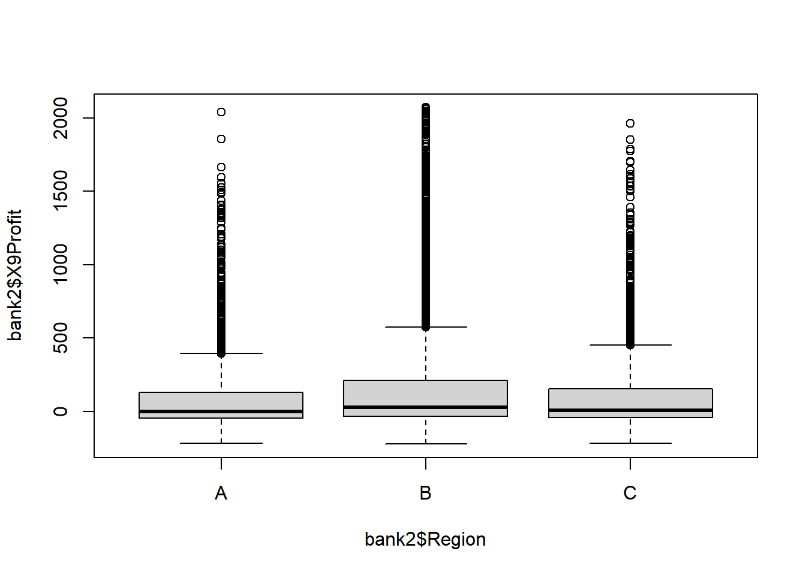
Because Profit is continuous and Region is Categorical, the tests to consider are ANOVA and Kruskal-Wallis. ANOVA is our first choice because it is the more powerful test, but it requires the Dependent Variable (Profit) to be Normally distributed and the variance to be similar across groups. The box plot makes it clear that the data are highly right skewed for every group and the standard deviation also appears to be increasing with income.
As a result, the correct test to choose is the Kruskal-Wallis. For completeness of the solution, I present both the ANOVA and K-W.
## ANOVA
anova(lm(X9Profit~ Region, data=bank2))> Analysis of Variance Table
>
> Response: X9Profit
> Df Sum Sq Mean Sq F value Pr(>F)
> Region 2 4637308 2318654 29.1 0.00000000000025 ***
> Residuals 22809 1820413671 79811
> ---
> Signif. codes: 0 '***' 0.001 '**' 0.01 '*' 0.05 '.' 0.1 ' ' 1## Kruskal-Wallis: Non-parametric alternative to ANOVA
kruskal.test(X9Profit~ Region, data=bank2)>
> Kruskal-Wallis rank sum test
>
> data: X9Profit by Region
> Kruskal-Wallis chi-squared = 101, df = 2, p-value <0.0000000000000002The null hypothesis of the Kruskal-Wallis is that all groups come from the same population distribution of customer profit. We observe the p-value is less than 0.05 and so we reject the null hypothesis that all groups have the same distribution of Profit.
Finally, because Online is our critical variable, we check to see if Online is evenly distributed across Regions. This will help us identify whether we expect that a multiple regression model may identify a different conclusion than the MW-U tests we performed above.
Because Region is an categorical variable, we can evaluate this with a chi-squared.
# % Online by Region
table(bank2$Region, bank2$X9Online)/rowSums(table(bank2$Region, bank2$X9Online))>
> 0 1
> A 0.9182 0.0818
> B 0.8598 0.1402
> C 0.8992 0.1008chisq.test(bank2$Region, bank2$X9Online)>
> Pearson's Chi-squared test
>
> data: bank2$Region and bank2$X9Online
> X-squared = 84, df = 2, p-value <0.0000000000000002We observe that higher income people are more likely to be Online. Once we account for age and income, we may find that Online is no longer significant.
TENURE
Tenure is a continuous variable and so we examine its histogram and bivariate relationship with profit using an X-Y scatter.
# summary of tenure data
summary(bank$X9Tenure)> Min. 1st Qu. Median Mean 3rd Qu. Max.
> 0.2 3.8 7.4 10.2 14.8 41.2# histogram of the distribution of Tenure
hist(bank$X9Tenure)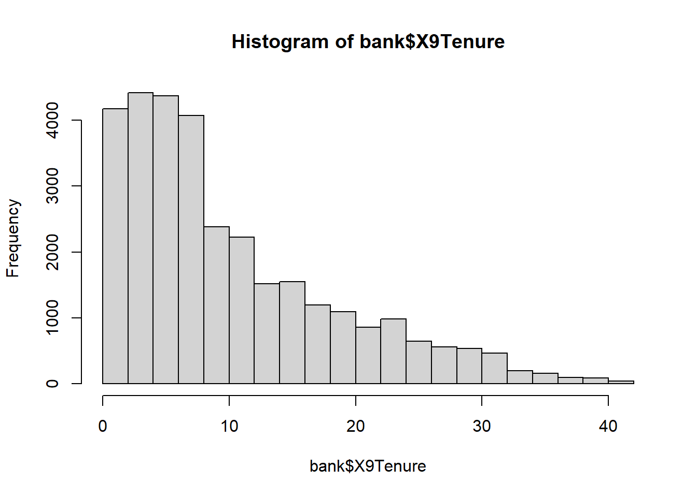
# X-Y scatter with line of best fit overlay
plot(X9Profit~ X9Tenure, data=bank2)
abline(lm(X9Profit~ X9Tenure, data=bank2), col="red")
We observe that customer tenure is not evenly distributed over time. We see that a large number of customers have been with the bank for less than 10 years and that a decreasing number of customers have been with the bank for more than 10 years.
To evaluate whether Tenure is a statistically significant contributor to customer profit, we can perform a simple linear regression.
summary(lm(X9Profit~ X9Tenure, data=bank2))>
> Call:
> lm(formula = X9Profit ~ X9Tenure, data = bank2)
>
> Residuals:
> Min 1Q Median 3Q Max
> -475.7 -154.1 -87.4 66.7 1989.8
>
> Coefficients:
> Estimate Std. Error t value Pr(>|t|)
> (Intercept) 65.172 3.012 21.6 <0.0000000000000002 ***
> X9Tenure 5.638 0.216 26.0 <0.0000000000000002 ***
> ---
> Signif. codes: 0 '***' 0.001 '**' 0.01 '*' 0.05 '.' 0.1 ' ' 1
>
> Residual standard error: 279 on 22810 degrees of freedom
> Multiple R-squared: 0.0289, Adjusted R-squared: 0.0288
> F-statistic: 678 on 1 and 22810 DF, p-value: <0.0000000000000002We observe that customer Tenure does appear to be a significant predictor of bank profits, with a p-value less than 0.05. However, we also note that the R-squared is only 3.6%, indicating that customer tenure only explains 3.6% of the variability in customer profitability.
Question 5
Q5. Using multiple variable linear regression to adjust for other customer features, evaluate whether online customers are more or less profitable than customers who do not use the bank’s online platform. Evaluate whether your regression satisfies the underlying assumptions of linear regression. If not, perform appropriate adjustments and transformations to perform the best analysis possible to inform business decision making at Pilgrim Bank.
Dataset for regression
R will automatically remove NA to perform regression, but that means that as you remove non-significant variables, the dataset on which you are doing regression is changing. Ideally, you are more deliberate about what observations are in and out of your analysis and you have made a conscious decision about how to treat missing variables.
We addressed this in Question 4 and created a dataset without any missing variables by deleting any observation with any missing values – this approach was acceptable for this assignment, but as you move forward in the course and professionally, a more sophisticated treatment of missing data is expected.
Candidate model A
# Regression 1 with all possible predictors
reg1 <- lm(X9Profit ~ Region + IncCat + AgeCat + X9Tenure + X9Online, data=bank2)
summary(reg1)>
> Call:
> lm(formula = X9Profit ~ Region + IncCat + AgeCat + X9Tenure +
> X9Online, data = bank2)
>
> Residuals:
> Min 1Q Median 3Q Max
> -522.7 -155.1 -70.7 66.4 1959.2
>
> Coefficients:
> Estimate Std. Error t value Pr(>|t|)
> (Intercept) -56.397 13.196 -4.27 0.0000192930154077 ***
> RegionB 18.640 6.379 2.92 0.0035 **
> RegionC 7.096 7.758 0.91 0.3604
> IncCat15-20K 0.993 11.651 0.09 0.9321
> IncCat20-30K 10.936 8.395 1.30 0.1927
> IncCat30-40K 10.861 8.553 1.27 0.2041
> IncCat40-50K 15.902 8.537 1.86 0.0625 .
> IncCat50-75K 39.696 7.471 5.31 0.0000001085586389 ***
> IncCat75-100K 60.790 8.159 7.45 0.0000000000000964 ***
> IncCat100-125K 78.551 9.316 8.43 < 0.0000000000000002 ***
> IncCat125K plus 146.812 8.367 17.55 < 0.0000000000000002 ***
> AgeCat15 to 24 29.947 11.932 2.51 0.0121 *
> AgeCat25 to 34 69.800 11.709 5.96 0.0000000025423582 ***
> AgeCat35 to 44 74.612 11.794 6.33 0.0000000002558697 ***
> AgeCat45 to 54 79.435 12.250 6.48 0.0000000000909716 ***
> AgeCat55 to 64 100.086 12.705 7.88 0.0000000000000035 ***
> AgeCat65 plus 135.746 12.528 10.84 < 0.0000000000000002 ***
> X9Tenure 4.088 0.235 17.36 < 0.0000000000000002 ***
> X9Online 17.025 5.498 3.10 0.0020 **
> ---
> Signif. codes: 0 '***' 0.001 '**' 0.01 '*' 0.05 '.' 0.1 ' ' 1
>
> Residual standard error: 274 on 22793 degrees of freedom
> Multiple R-squared: 0.0649, Adjusted R-squared: 0.0641
> F-statistic: 87.9 on 18 and 22793 DF, p-value: <0.0000000000000002We observe that all the predictors are significant (or some categories, but not all, are significant for categorical variables).
We can combine categories to make the regression easier to read and interpret for decision makers, but there are no variables that need to be removed.
For example, Income category 15-20K is not statistically different than the reference group of <15K. Because these categories are adjacent, they can be combined.
Similarly, the coefficient beside 20-30K and 30-40K are very similar, with similar standard errors, and similar p-values. Because these categories are adjacent, they can be combined. Income category 40-50K is also similar to this group, so choosing to combine with the 20-40K group is reasonable, but it also isn’t necessary.
Candidate model B
# create new income variable
bank2$newInc <- NA
bank2$newInc[bank2$IncCat == "lt 15K" | bank2$IncCat == "15-20K"] <- "lt 20K"
bank2$newInc[bank2$IncCat == "20-30K" | bank2$IncCat == "30-40K" ] <- "20-40K"
bank2$newInc[bank2$IncCat == "40-50K" ] <- "40-50K"
bank2$newInc[bank2$IncCat == "50-75K" ] <- "50-75K"
bank2$newInc[bank2$IncCat == "75-100K" ] <- "75-100K"
bank2$newInc[bank2$IncCat == "100-125K" ] <- "100-125K"
bank2$newInc[bank2$IncCat == "125K plus" ] <- "125K plus"
bank2$newInc <- factor(bank2$newInc, levels = c("lt 20K", "20-40K", "40-50K", "50-75K", "75-100K", "100-125K", "125K plus"))
table(bank2$newInc, bank2$IncCat, useNA = "ifany")>
> lt 15K 15-20K 20-30K 30-40K 40-50K 50-75K 75-100K 100-125K
> lt 20K 1917 780 0 0 0 0 0 0
> 20-40K 0 0 2478 2265 0 0 0 0
> 40-50K 0 0 0 0 2329 0 0 0
> 50-75K 0 0 0 0 0 5309 0 0
> 75-100K 0 0 0 0 0 0 3090 0
> 100-125K 0 0 0 0 0 0 0 1702
> 125K plus 0 0 0 0 0 0 0 0
>
> 125K plus
> lt 20K 0
> 20-40K 0
> 40-50K 0
> 50-75K 0
> 75-100K 0
> 100-125K 0
> 125K plus 2942# Regression 2 with all possible predictors, new income category
reg2 <- lm(X9Profit ~ Region + newInc + AgeCat + X9Tenure + X9Online, data=bank2)
summary(reg2)>
> Call:
> lm(formula = X9Profit ~ Region + newInc + AgeCat + X9Tenure +
> X9Online, data = bank2)
>
> Residuals:
> Min 1Q Median 3Q Max
> -522.8 -155.1 -70.8 66.4 1959.2
>
> Coefficients:
> Estimate Std. Error t value Pr(>|t|)
> (Intercept) -56.154 12.884 -4.36 0.00001315763504211 ***
> RegionB 18.675 6.349 2.94 0.0033 **
> RegionC 7.128 7.747 0.92 0.3576
> newInc20-40K 10.611 6.651 1.60 0.1107
> newInc40-50K 15.614 7.839 1.99 0.0464 *
> newInc50-75K 39.406 6.652 5.92 0.00000000318188153 ***
> newInc75-100K 60.500 7.416 8.16 0.00000000000000036 ***
> newInc100-125K 78.260 8.668 9.03 < 0.0000000000000002 ***
> newInc125K plus 146.520 7.632 19.20 < 0.0000000000000002 ***
> AgeCat15 to 24 29.955 11.928 2.51 0.0120 *
> AgeCat25 to 34 69.811 11.699 5.97 0.00000000245084812 ***
> AgeCat35 to 44 74.624 11.784 6.33 0.00000000024516579 ***
> AgeCat45 to 54 79.446 12.241 6.49 0.00000000008748792 ***
> AgeCat55 to 64 100.110 12.695 7.89 0.00000000000000326 ***
> AgeCat65 plus 135.770 12.522 10.84 < 0.0000000000000002 ***
> X9Tenure 4.088 0.235 17.37 < 0.0000000000000002 ***
> X9Online 17.028 5.497 3.10 0.0020 **
> ---
> Signif. codes: 0 '***' 0.001 '**' 0.01 '*' 0.05 '.' 0.1 ' ' 1
>
> Residual standard error: 274 on 22795 degrees of freedom
> Multiple R-squared: 0.0649, Adjusted R-squared: 0.0642
> F-statistic: 98.8 on 16 and 22795 DF, p-value: <0.0000000000000002Regression diagnostics for candidate model B
Now we can proceed to investigate the regression diagnostics.
# Evaluate the regression diagnostics
## Standardized residuals vs. continuous predictors
plot(x=bank2$X9Tenure , y=rstandard(reg2))
abline(0, 0, lty=2, col="grey") # draw a straight line at 0 for a visual reference
lines(lowess(x=bank2$X9Tenure, rstandard(reg2)), col = "red", lwd = 2)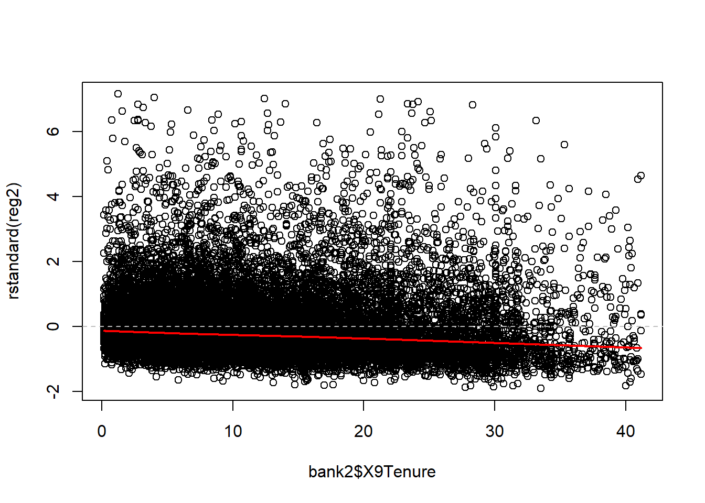
## Standardized residuals vs. categorical predictors
boxplot(rstandard(reg2) ~ bank2$AgeCat)boxplot(rstandard(reg2) ~ bank2$newInc)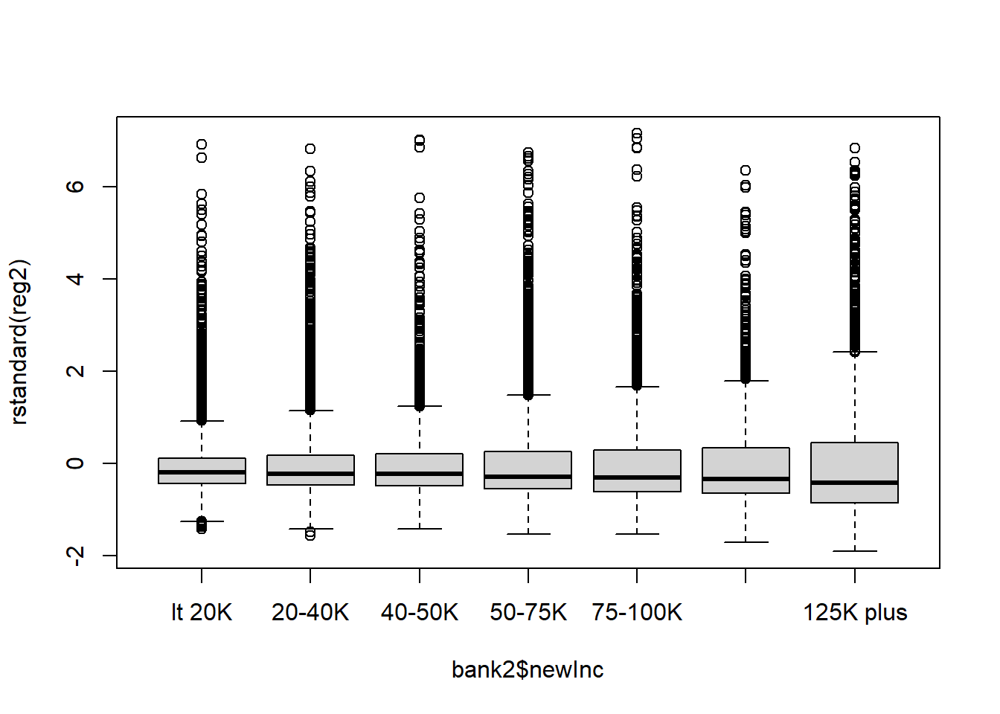
boxplot(rstandard(reg2) ~ bank2$X9Online)## Standardized residuals vs. fitted values
plot(x=reg2$fitted.values, y=rstandard(reg2))
abline(0, 0, lty=2, col="grey") # draw a straight line at 0 for a visual reference
lines(lowess(x=reg2$fitted.values, rstandard(reg2)), col = "red", lwd = 2)## Outliers, leverage, and influence
## Residuals vs. Leverage
plot(reg2, 5)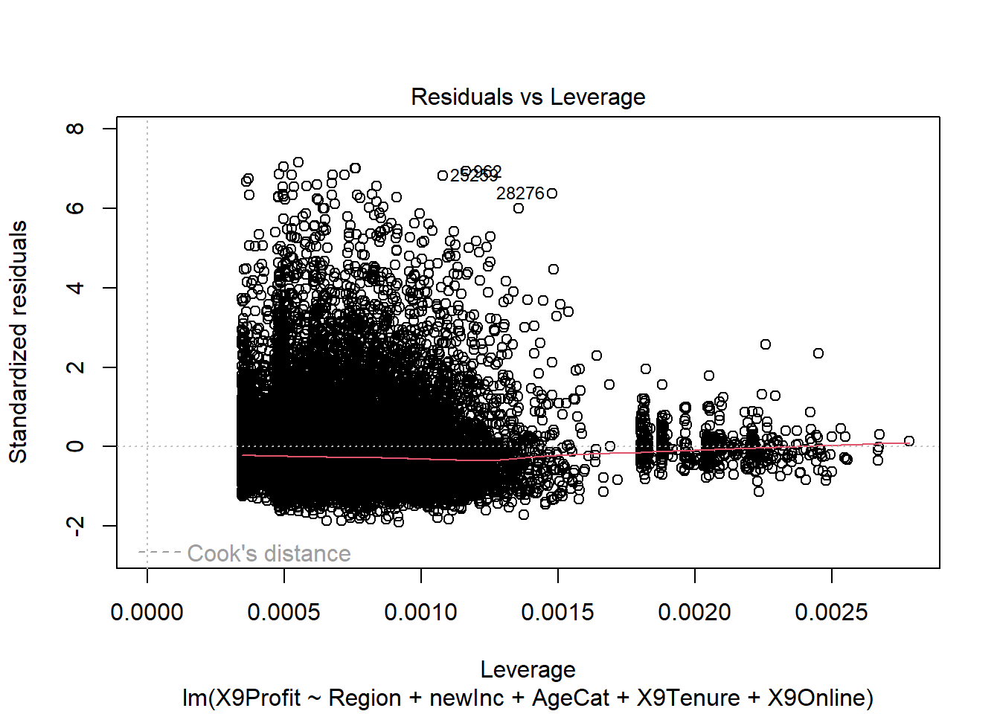
## Cook's distance
plot(reg2, 4)## Cook's distance vs. Leverage
plot(reg2, 6)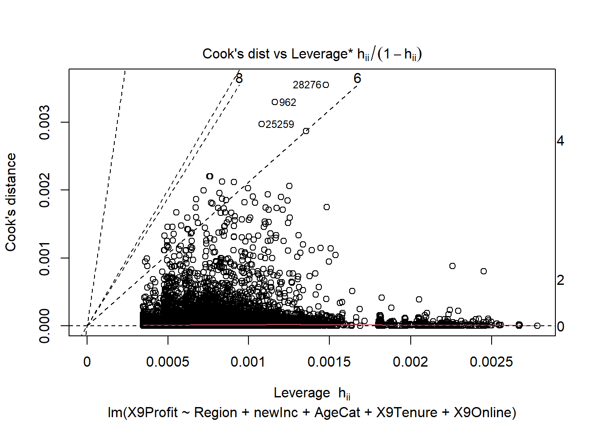
## Normality of the residuals
library(car)
qqPlot(reg2, id=FALSE) # id=FALSE suppresses print out of two most extreme valuesAcross several of these graphs, it is clear that the residual error is not evenly distributed above and below the zero line and that the errors have a long right tail.
In the graph presenting the standardized residuals vs. fitted values, it is also apparent that the variance is not constant over the fitted values. This is the concerning < pattern indicating that there is heteroskedasticity!
The QQ-plot makes it clear that the residuals are not normally distributed!
Candidate model C
One transformation that might improve this model is a log-transform of the dependent variable. Because there are negative values, we need to right shift the data before we do the log transformation. Note, that if we ever use this model for prediction, we would need to un-do both the log transformation and the shift.
bank2$adj.Profit = log(bank2$X9Profit - min(bank2$X9Profit) + 2)Now we can do a linear regression
# Regression 2 with all possible predictors, new income category
reg3 <- lm(adj.Profit ~ Region + newInc + AgeCat + X9Tenure + X9Online, data=bank2)
summary(reg3)>
> Call:
> lm(formula = adj.Profit ~ Region + newInc + AgeCat + X9Tenure +
> X9Online, data = bank2)
>
> Residuals:
> Min 1Q Median 3Q Max
> -4.982 -0.362 -0.066 0.401 2.216
>
> Coefficients:
> Estimate Std. Error t value Pr(>|t|)
> (Intercept) 5.164270 0.031443 164.24 < 0.0000000000000002 ***
> RegionB 0.081260 0.015495 5.24 0.0000001581383680 ***
> RegionC 0.042252 0.018906 2.23 0.0254 *
> newInc20-40K 0.029778 0.016232 1.83 0.0666 .
> newInc40-50K 0.051086 0.019131 2.67 0.0076 **
> newInc50-75K 0.099250 0.016233 6.11 0.0000000009862463 ***
> newInc75-100K 0.142774 0.018097 7.89 0.0000000000000032 ***
> newInc100-125K 0.188658 0.021154 8.92 < 0.0000000000000002 ***
> newInc125K plus 0.327268 0.018626 17.57 < 0.0000000000000002 ***
> AgeCat15 to 24 0.087983 0.029110 3.02 0.0025 **
> AgeCat25 to 34 0.180112 0.028552 6.31 0.0000000002872909 ***
> AgeCat35 to 44 0.192624 0.028757 6.70 0.0000000000215744 ***
> AgeCat45 to 54 0.204273 0.029873 6.84 0.0000000000082327 ***
> AgeCat55 to 64 0.226118 0.030981 7.30 0.0000000000003001 ***
> AgeCat65 plus 0.348739 0.030560 11.41 < 0.0000000000000002 ***
> X9Tenure 0.007785 0.000574 13.55 < 0.0000000000000002 ***
> X9Online 0.002041 0.013416 0.15 0.8791
> ---
> Signif. codes: 0 '***' 0.001 '**' 0.01 '*' 0.05 '.' 0.1 ' ' 1
>
> Residual standard error: 0.668 on 22795 degrees of freedom
> Multiple R-squared: 0.0535, Adjusted R-squared: 0.0529
> F-statistic: 80.6 on 16 and 22795 DF, p-value: <0.0000000000000002Regression diagnostics for candidate model C
Now we can proceed to investigate the regression diagnostics.
# Evaluate the regression diagnostics
## Standardized residuals vs. continuous predictors
plot(x=bank2$X9Tenure , y=rstandard(reg3))
abline(0, 0, lty=2, col="grey") # draw a straight line at 0 for a visual reference
lines(lowess(x=bank2$X9Tenure, rstandard(reg3)), col = "red", lwd = 2)## Standardized residuals vs. categorical predictors
boxplot(rstandard(reg3) ~ bank2$AgeCat)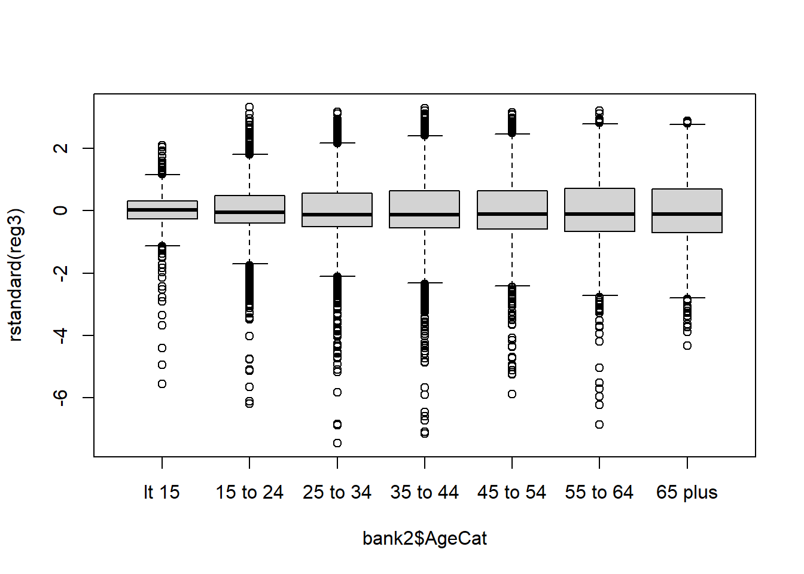
boxplot(rstandard(reg3) ~ bank2$newInc)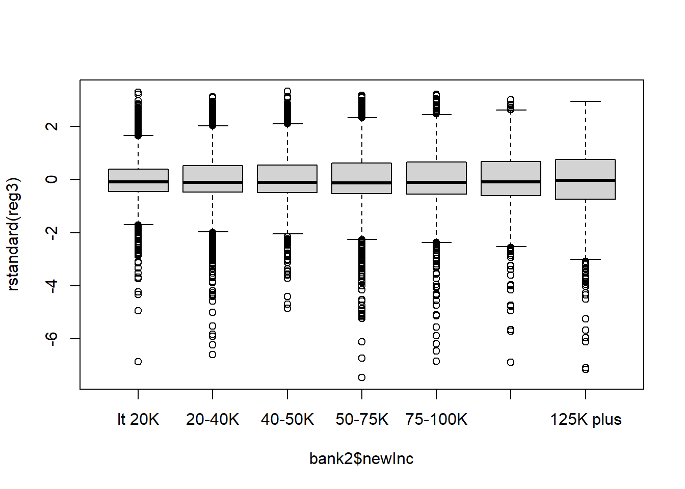
boxplot(rstandard(reg3) ~ bank2$X9Online)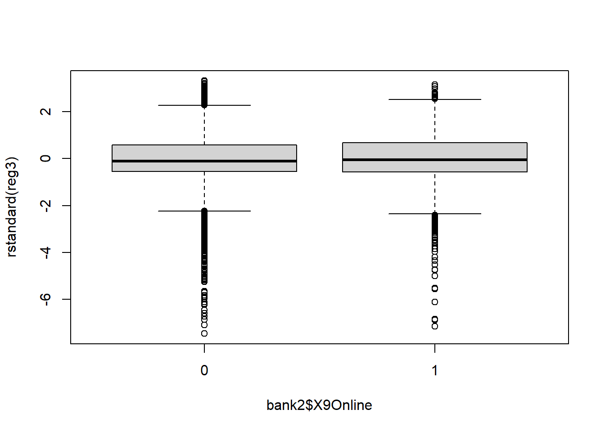
## Standardized residuals vs. fitted values
plot(x=reg3$fitted.values, y=rstandard(reg3))
abline(0, 0, lty=2, col="grey") # draw a straight line at 0 for a visual reference
lines(lowess(x=reg2$fitted.values, rstandard(reg3)), col = "red", lwd = 2)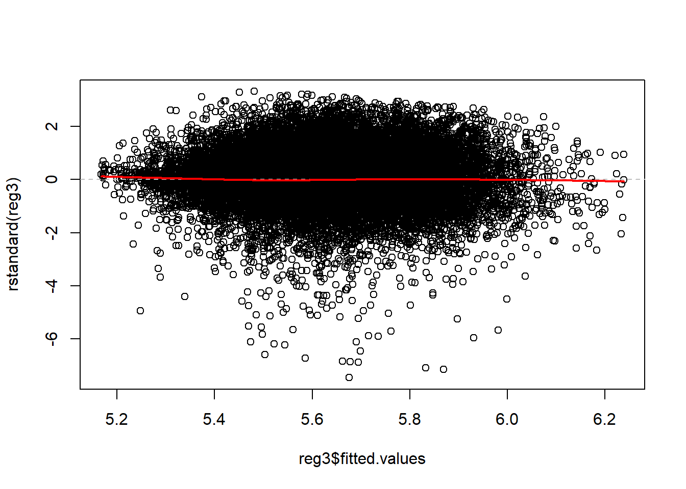
## Outliers, leverage, and influence
## Residuals vs. Leverage
plot(reg3, 5)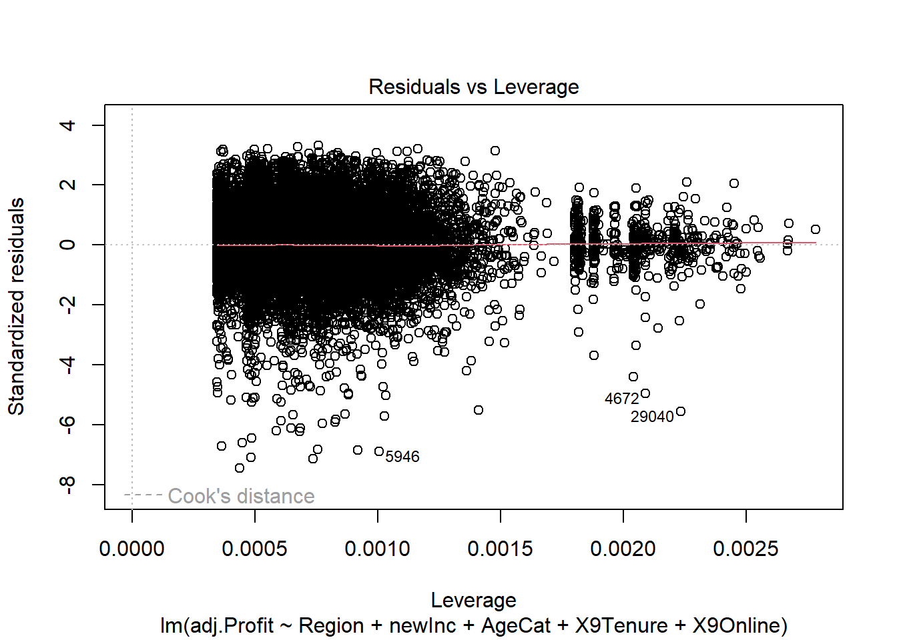
## Cook's distance
plot(reg3, 4)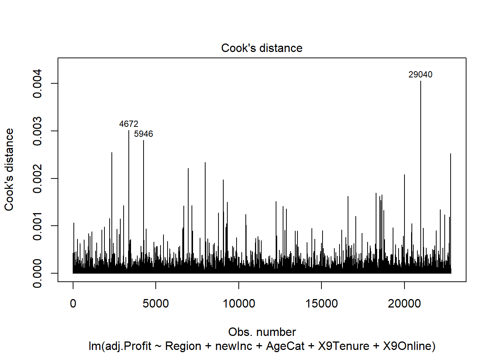
## Cook's distance vs. Leverage
plot(reg3, 6)## Normality of the residuals
library(car)
qqPlot(reg3, id=FALSE) # id=FALSE supresses print out of two most extreme values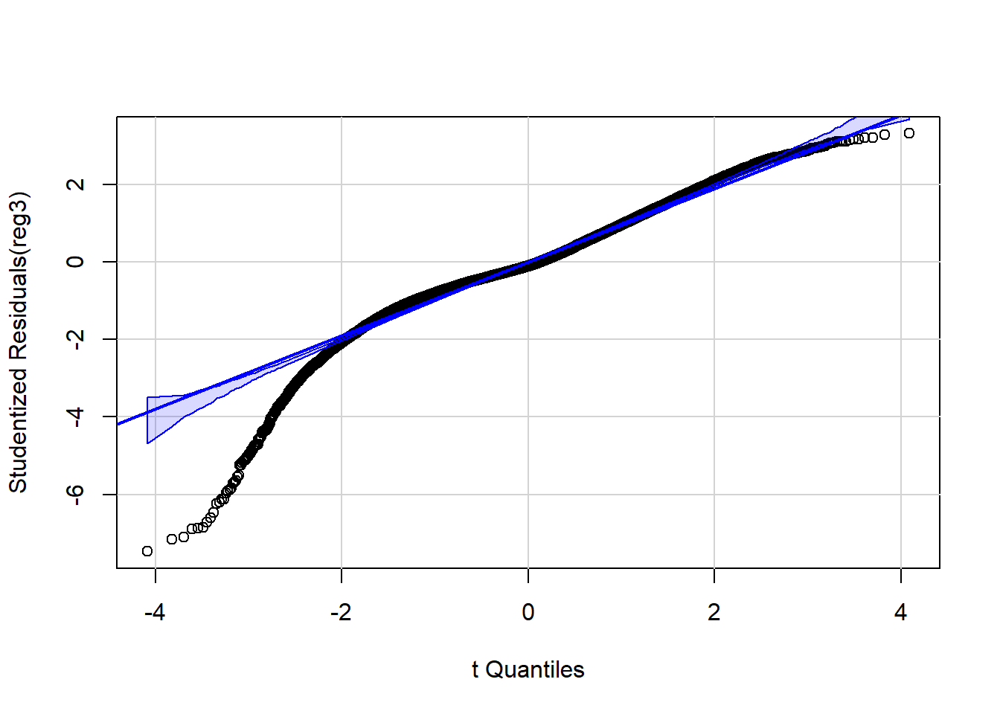
# histogram of the residuals... what does this QQ look like?
hist(reg3$residuals)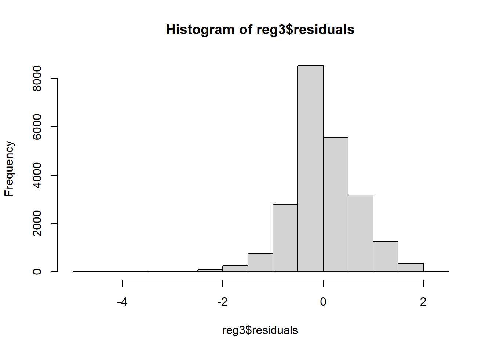
Across all of the regression diagnostics, the log-transformed model is superior.
In the residual plots with predictors the errors are more evenly distributed above and below the zero line. In the residual plot with fitted values, the errors are more evenly distributed above and below the zero line and the shape of the residuals is more distributed over the range of fitted values.
Neither model had a problem with high leverage points.
Finally, the QQ plot still indicates deviation from the Normal distribution for values of the Normal distribution more than 2 standard deviations below the mean, but for the majority of values (especially for those in the mid-range of the distribution), the residuals are well characterized as a Normal distribution.
This is a high-quality linear regression model satisfying the underlying assumptions of regression.
Interpretation
In the log-transformed model, Online is not a statistically significant predictor of Profit (p-value of 0.88). Therefore, we do not reject the null hypothesis that Online status does not affect profit after accounting for the impact of customer age and income.
This is particularly interesting because in the original model, Online did have a p-value less than 0.05!
Question 6
Q6. In light of your analysis, help Green with his dilemma: “Did the online channel make customers more profitable? And what did this imply for the management team’s decision regrading fees or rebates for use of the channel?”
Any recommendation provided should be consistent with your own analysis.
Based on my analysis, after adjusting for Age, Income, and Region, Online is no longer associated with customer profitability.
We did observe that younger customers and higher income customers are more likely to use Online resources; the availability of Online banking may attract these types of clients towards our bank. In that way, Online may serve as a method of recruiting more customers to the bank.
Therefore, I do not recommend fees or rebates for Online services at this time.